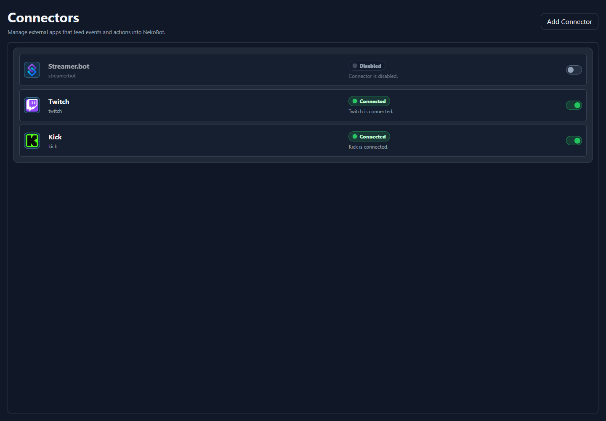

Setup Page
Connectors
Connectors are the bridge between external platforms and NekoBot. They feed chat, reward, command, and platform events into overlays and command triggers.
Connector List

The Connectors page shows every configured connector, its current state, and whether it is enabled. Use Add Connector when you need another platform account or another integration instance.
UI areaWhat it means
Connector cardShows the connector icon, display name, internal type, connection state, and enabled toggle.Connected / DisabledShows whether the connector runtime is currently active and usable by NekoBot.ToggleEnables or disables that connector without deleting its saved settings.Add ConnectorCreates a new connector instance for a supported integration.Connector Types
ConnectorUse it for
Streamer.botBridge existing Streamer.bot events and workflows into NekoBot.TwitchRead Twitch chat, channel reward redemptions, and supported Twitch events through NekoBot's connector layer.KickRead Kick chat and supported Kick platform events through the same connector model.Connector events can be used by Command Triggers, overlay box triggers, chat monitoring, and reward workflows.
Status Bar
The Setup Home header now shows connector health, connected overlay viewers, Chat, and Settings. Use it as the quick read on whether NekoBot is connected before testing overlays.
Connectorsshows how many configured connectors are currently connected.Viewersshows connected overlay viewers, including OBS browser sources and open overlay preview pages.Chatopens the compact chat monitor from the setup header.Settingsopens app settings and logs.